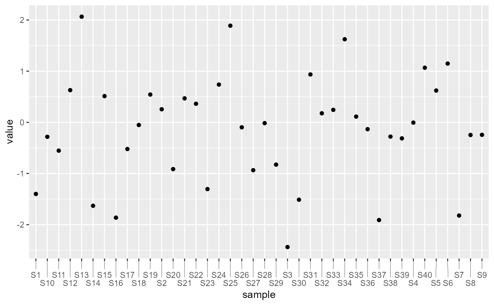
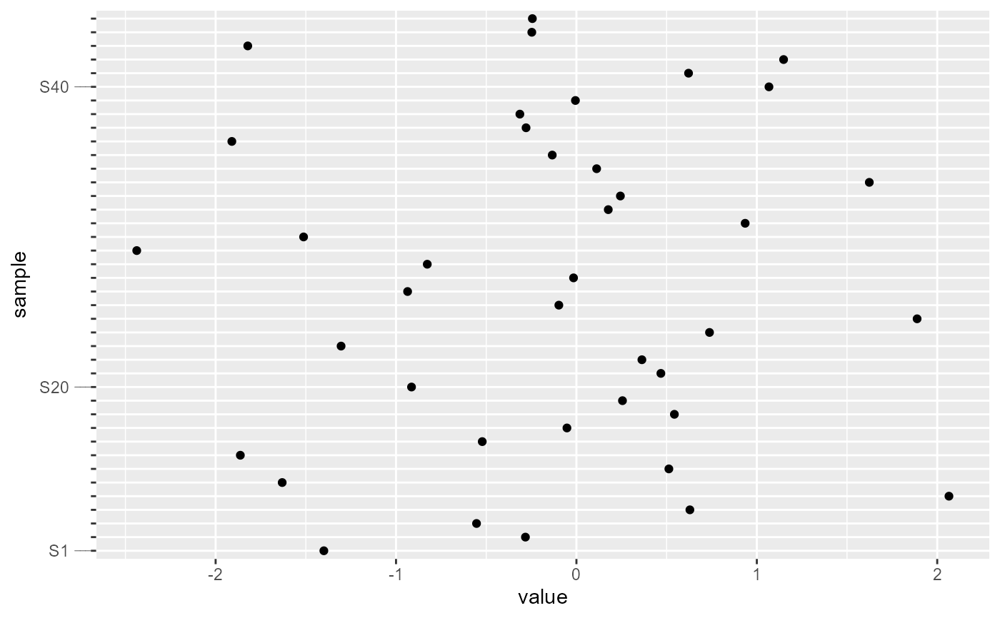

guide_axis_smart() is a drop-in replacement for ggplot2::guide_axis().
It is meant for discrete axes that carry more category labels than the panel
can display at once. Instead of letting the labels overlap, it
Usage
guide_axis_smart(
title = ggplot2::waiver(),
which = NULL,
n = NULL,
nrow = NULL,
padding = 0.25,
gap = 0.3,
extend = 0,
connection = TRUE,
connection_style = c("diagonal", "straight", "elbow"),
link_length = 3,
connection_col = NULL,
connection_lwd = 0.5,
connection_lty = 1,
tick = c("all", "shown", "none"),
angle = NULL,
panel_width = NULL,
max_nrow = 8L,
hjust = NULL,
vjust = NULL,
minor.ticks = FALSE,
cap = "none",
order = 0,
position = ggplot2::waiver(),
theme = NULL
)Arguments
- title
A character string or
waiver()for the axis title.- which
Which labels should be displayed?
NULL(the default) displays all labels that fit. Otherwise one ofa numeric vector of positions (indices into the vector of breaks),
a character vector of label values,
a logical vector of the same length as the breaks,
a function of two arguments,
function(labels, positions), that returns a logical vector (or a numeric vector of indices). A zero-length vector (integer(0),character(0),logical(0)) selects no labels at all and draws an empty axis.
Facets are supported: the guide is built once per panel (or once per column for a shared axis), so a character
whichsuch asc("gene1", "gene2")only marks the gene in the panel where it actually appears. Unmatched labels are silently skipped, which keeps a per-panel request quiet.- n
Maximum number of labels to display. When
whichisNULLandnis set,nevenly spaced labels are picked. Whenwhichis given, at mostnof the selected labels are kept.- nrow
Number of parallel tracks used for the labels: rows for a horizontal axis, columns for a vertical axis.
NULL(the default) picks the number of tracks automatically: labels stay in one track whenever they fit, and are distributed over several tracks only when they crowd into a small region. When a track count is supplied explicitly and a label does not fit, the label is dropped (with a message) instead of being drawn on top of another one.- padding
Minimal gap between two label boxes in a track, as a fraction of the label height. Defaults to
0.25.- gap
Gap between two neighbouring tracks, as a fraction of the label height. Defaults to
0.30.- extend
How far a label may be pushed beyond the axis range, as a fraction of the axis range. The default
0keeps every label inside the panel, so labels are never clipped at the edge of the device. A positive value gives the layout more freedom but lets labels overhang the panel, which requires enoughplot.margin.- connection
Draw leader lines between ticks and labels? Defaults to
TRUE.- connection_style
Shape of the leader line.
"diagonal"(the default, the style used bycirclizeandComplexHeatmap::anno_mark()) is a short segment perpendicular to the axis, then a diagonal, then another short perpendicular segment ending at the label."straight"is a single line from the tick to the label and"elbow"is a perpendicular segment followed by a shelf parallel to the axis.- link_length
Length in millimetres of the leader line between the axis and the first track of labels. Defaults to
3.- connection_col, connection_lwd, connection_lty
Appearance of the leader lines.
connection_col = NULLuses the colour of the axis ticks.- tick
Which ticks should be drawn:
"all"(default),"shown"(only the ticks of the displayed labels) or"none".- angle
Rotation of the labels in degrees,
NULLto inherit the theme.- panel_width
Width (for an x axis) or height (for a y axis) of the panel in centimetres. Only used to estimate the number of tracks before the plot is rendered;
NULL(the default) estimates it from the graphics device. Set it when the automatic estimate produces too few tracks.- max_nrow
Upper bound for the automatic number of tracks. Defaults to
8.- hjust, vjust
Horizontal/vertical justification of a label inside its box.
NULL(the default) centres the text in the box, which keeps the leader lines aligned with the visual centre of the label.- minor.ticks
![[Experimental]](figures/lifecycle-experimental.svg) Draw minor ticks,
passed on to
Draw minor ticks,
passed on to ggplot2::guide_axis().- cap, order, position, theme
Passed on to
ggplot2::guide_axis().
Value
A guide object that can be used in guides() or in the guide
argument of a scale.
Details
displays only the labels selected with
which(and/or at mostnevenly spaced labels),distributes the displayed labels over
nrowparallel tracks (rows for an x axis, columns for a y axis),connects every displayed label to its tick with a leader line, and
reserves exactly as much axis space as the label stack needs, so the available page space is used efficiently.
The one-dimensional arrangement of the labels inside each track is a port of
the smartAlign algorithm from the
circlize package.
Examples
library(ggplot2)
#> Warning: package 'ggplot2' was built under R version 4.5.3
d <- data.frame(
sample = factor(paste0("S", 1:40)),
value = rnorm(40)
)
# 40 categories: labels are spread over several rows and connected to
# their ticks with leader lines
ggplot(d, aes(sample, value)) +
geom_point() +
scale_x_discrete(guide = guide_axis_smart())

# only a hand-picked subset of labels is displayed
ggplot(d, aes(sample, value)) +
geom_point() +
scale_x_discrete(
guide = guide_axis_smart(which = c("S1", "S10", "S20", "S30", "S40"))
)
 # on a vertical axis the labels are stacked in columns
ggplot(d, aes(value, sample)) +
geom_point() +
scale_y_discrete(guide = guide_axis_smart(which = c("S1", "S20", "S40")))
# on a vertical axis the labels are stacked in columns
ggplot(d, aes(value, sample)) +
geom_point() +
scale_y_discrete(guide = guide_axis_smart(which = c("S1", "S20", "S40")))
